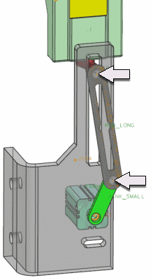
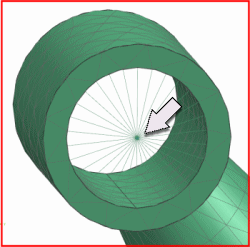
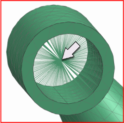

将柔性体有限元模型与机构连接
在高级仿真的有限元模型文件中，必须定义一个柔性体与运动机构连接的点，这个连接点必须位于各个运动副、衬套、力、力矩、弹簧或者阻尼器等柔性体运动对象的原点上。
虽然可以使用任何单元类型来定义这些连接点，但通常将使用1D 连接(蜘蛛单元)。
对于柔性体仿真的精度，这个连接单元中的一个独立节点(比如蜘蛛网格的核心节点)应该与运动对象的原点一致，您将在这个连接节点处使用特定的约束(将在下一节描述)定义刚度。
注释 |
使用 RBE2单元时，注意双节点依附。双节点依附在两个单元共享一个相关节点时出现。如果您的模型包含双节点依附，那么求解器可能无法正确计算模型中的自由度，注意到如果您使用 NX Nastran AUTOMPC 参数来解决这个问题时，运动导航器求解将会失败。 |
|

|
定义在旋转副位置的蜘蛛单元
确保连接节点位于载荷平衡的位置，例如，假设您正在把柔性体连接到一个定义在孔上的旋转副，将连接节点定义在钻孔中心处，而不是孔的边缘。
 |
销钉连接实例(旋转副定义在钻孔中心)
|

|
定义在孔边缘的错误连接节点
|

|